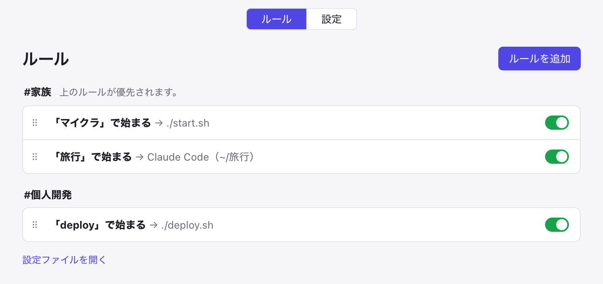
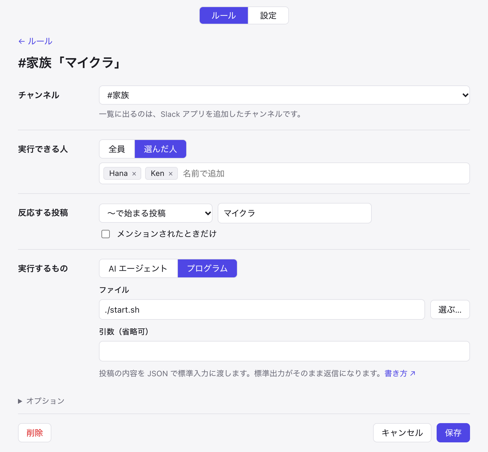
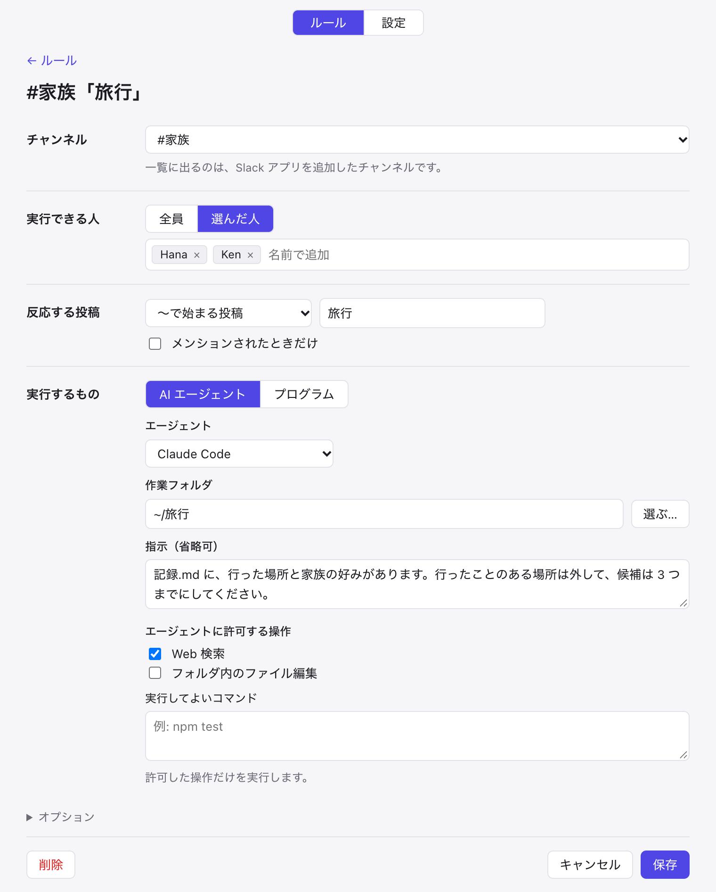
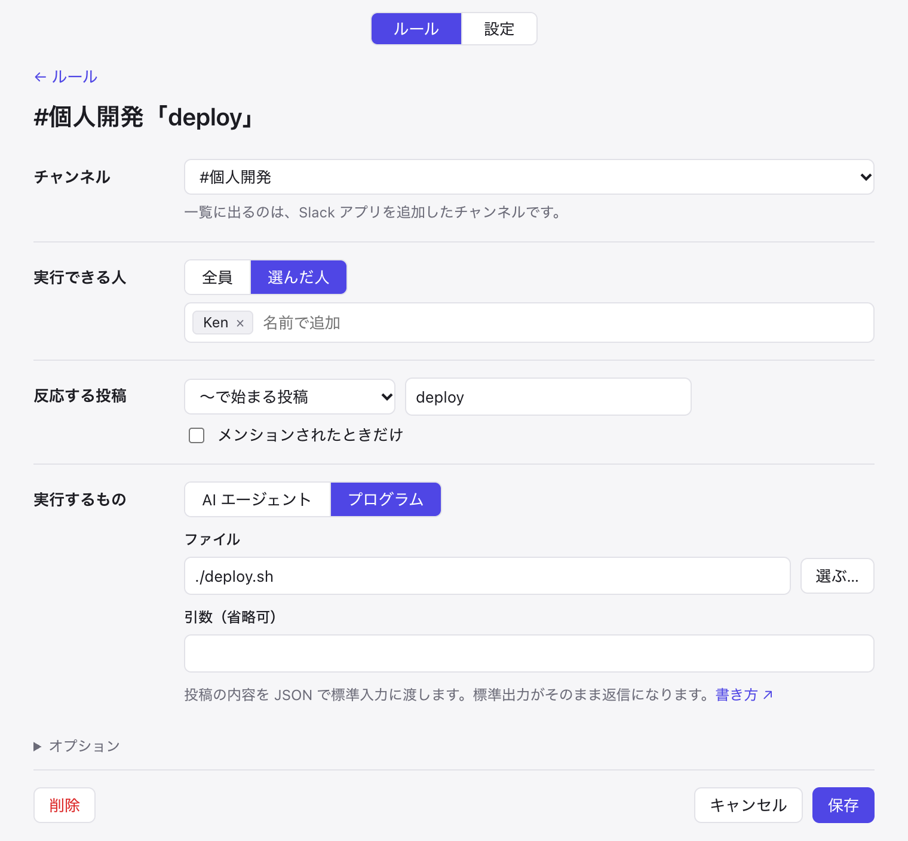

Slack に書けば、家の Mac で動く。 ボットのコードは要らない。
Slack のボットの用途が増えるたびに、投稿の振り分けや返信のコードを書く必要はありません。SockDock にルールを足すだけです。
brew install --cask iwamatsu0430/tap/sockdockSockDock は Apple の公証を受けていないため、初めて開くときに macOS の設定で許可が要ります。開き方
何が動くかは、一覧でわかります
自作のボットでは、どの投稿で何が動き、誰が実行できるのかは、コードを追わないとわかりません。SockDock では、用途ごとのルールが一覧に並び、画面で確かめて直せます。
@app.message(re.compile("^マイクラ")) def minecraft(message, say): if message["user"] not in FAMILY: return ... @app.message(re.compile(r"^deploy\b")) def deploy(message, say): if message["user"] != KEN: return ... @app.message(re.compile("^旅行")) def trip(message, say): ... # AI エージェントを呼び、スレッドの会話を引き継ぐ

- Slack とのやりとりは、SockDock が受け持ちます接続、投稿の振り分け、👀 のリアクション、スレッドへの返信と、続きのやりとりです。Socket Mode で Mac のほうからつなぐので、公開 URL は要りません。
- 実行できる人と、できる操作は、ルールで決めます実行できる人を絞らなければ、チャンネルに投稿できる人は誰でも実行できます。投稿の文面がコマンドとして実行されることはありません。AI エージェントは、許可した操作しかできません。
ユースケース
上の一覧にある 3 つのルールです。



始め方
- Slack アプリを作るSockDock のボタンを押すと、権限、Socket Mode、イベントを設定済みの作成ページが開きます。そのまま作成して、ワークスペースにインストールします。できた Slack アプリを、使うチャンネルに追加します。
- トークンを 2 つ貼るApp-Level Token（
xapp-）をconnections:writeのスコープを付けて発行し、Bot Token（xoxb-）と一緒に SockDock に貼ります。どちらも Mac のキーチェーンに保存されます。 - ルールを作るメニューバーの SockDock で、「チャンネル」「反応する投稿」「実行するもの」を選びます。
Slack での動き
- 投稿がルールに合うと 👀 が付きます。処理が終わると 👀 が外れ、スレッドに返信が付きます。
- スレッドに続きを書くと、キーワードがなくても同じルールが動きます。AI エージェントは前のやりとりを覚えています。
もう少し詳しく
Claude Code や Codex から、MCP で SockDock のルールを足したり直したりできます。登録は、設定画面の「MCP」でコピーするだけです。AI エージェントがルールを変えると、Mac に通知が出ます。
#個人開発 で「deploy」と書いたら ./deploy.sh を動かすルールを足して。実行できるのは自分だけにして。
#個人開発 に「deploy」のルールを足しました。実行できるのは Ken だけです。
投稿やスレッドの続きに付けたファイルも、AI エージェントやプログラムに渡ります。AI エージェントには、「このスクショを見て」と頼めます。
メニューバーのアプリのほかに、CLI もあります。sockdock service install を実行すると、SockDock がサービスとして登録され、ログイン時に起動し、落ちたら再起動します。
初めて開くとき
SockDock は Apple の公証を受けていないため、初めて開こうとすると、macOS が「“SockDock” は開いていません」と表示して起動を止めます。
- 完了を押します（ゴミ箱に入れるは押さないでください）。
- システム設定の「プライバシーとセキュリティ」を開き、下のほうにあるこのまま開くを押します。
- 確認が出たら開くを押します。次からはそのまま開けます。
許可されるのは SockDock だけです。ほかのアプリは、これまでどおり確認されます。Homebrew は、ダウンロードしたファイルが tap に記録されたハッシュと一致するのを確かめてからインストールします。Apple サポート「Mac でアプリを安全に開く」